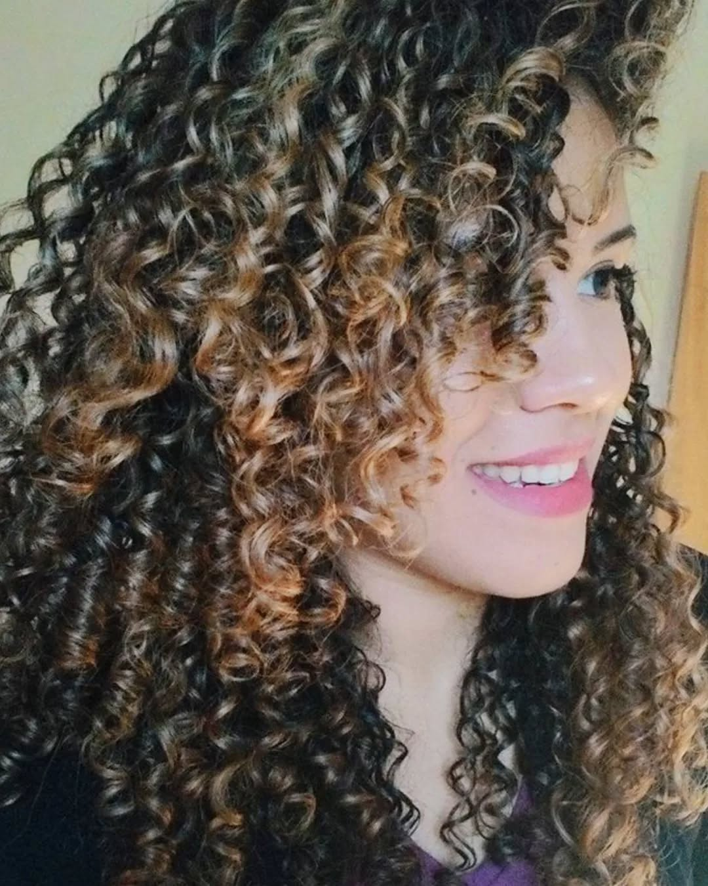
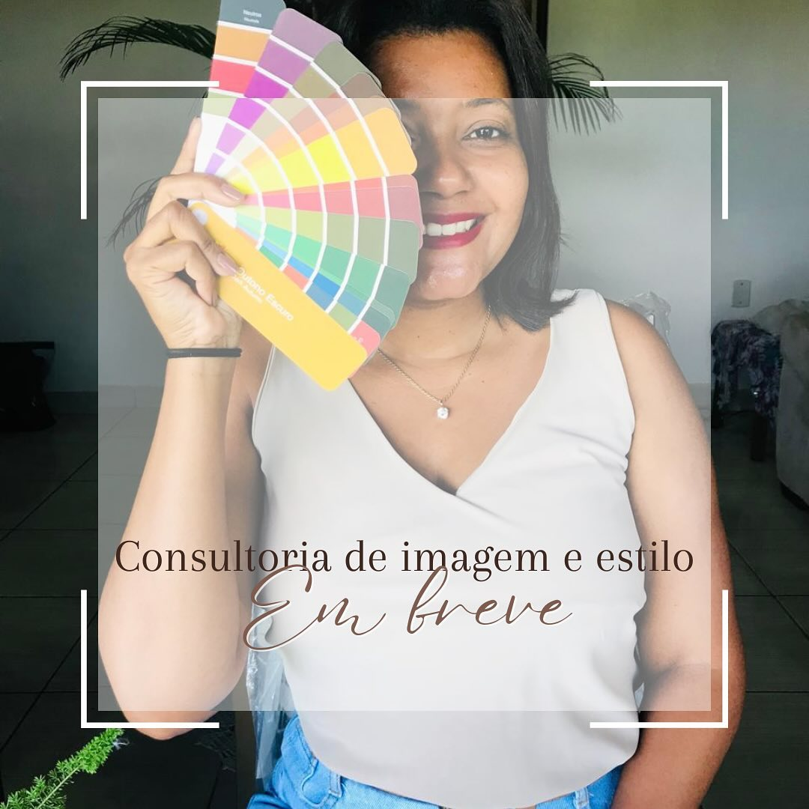

Diana Ayi
@dayi
Home
Explorar
9+Notificações
Keke Benjamin accepted your friend'z request
2 dias atrás

John Doe comentou no seu post
37 minutos atrás
Mary Oppong e outros 283 gostaram do seu post
2 dias atrás
Doris Y. Lartey comentou no post que você está marcado
2 dias atrás

Kate Summers comentou no post que você está marcado
1 hora atrás

Jane Doe accepted your friend'z request
6 horas atrás